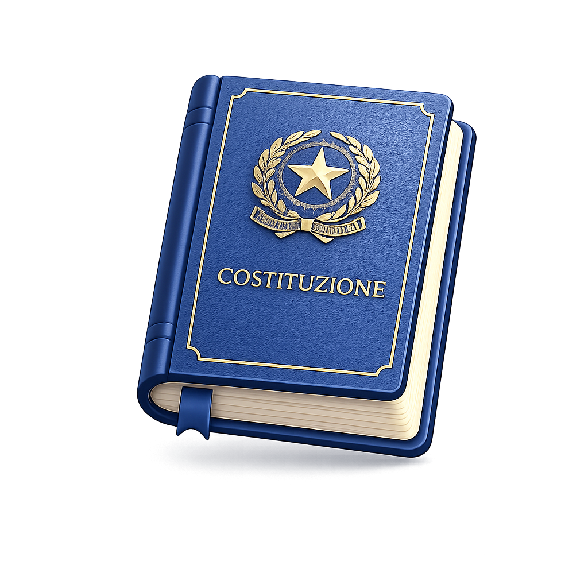
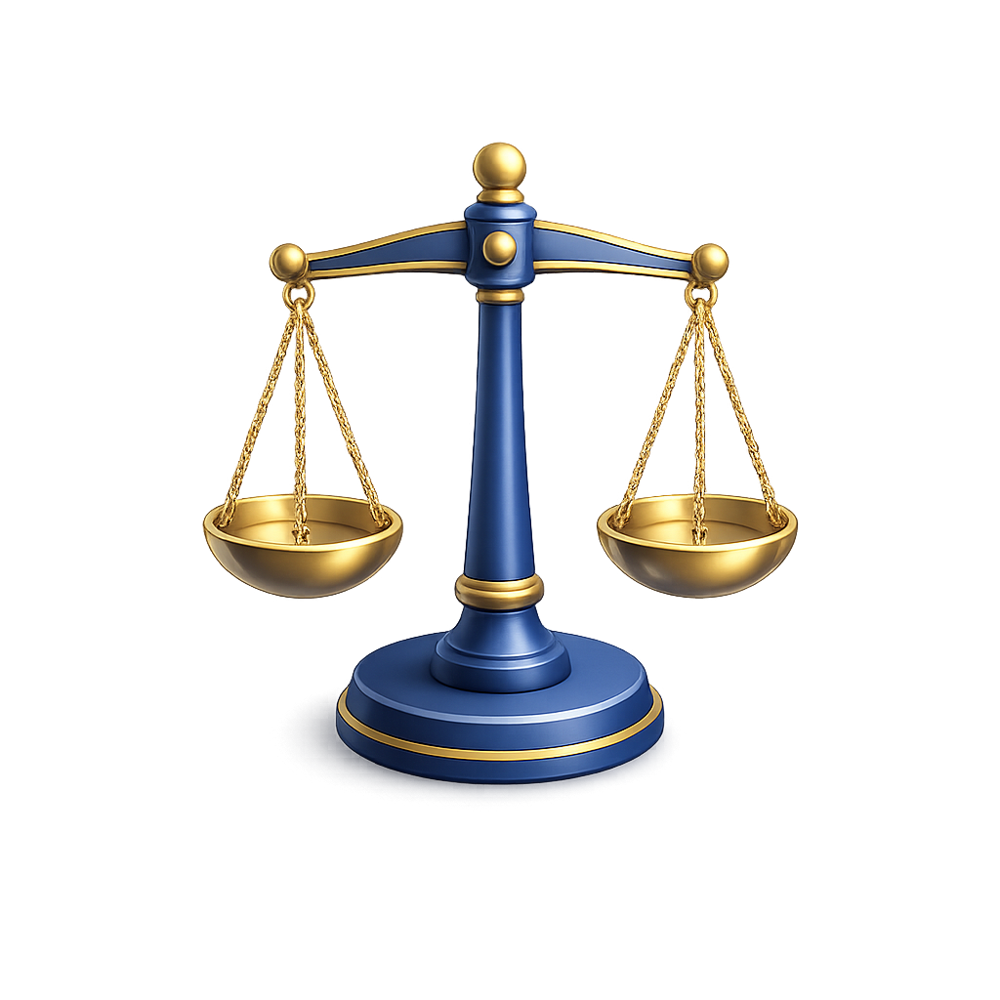
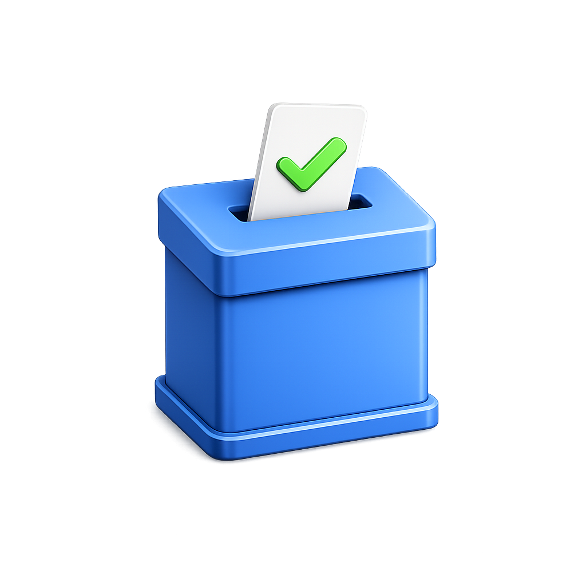
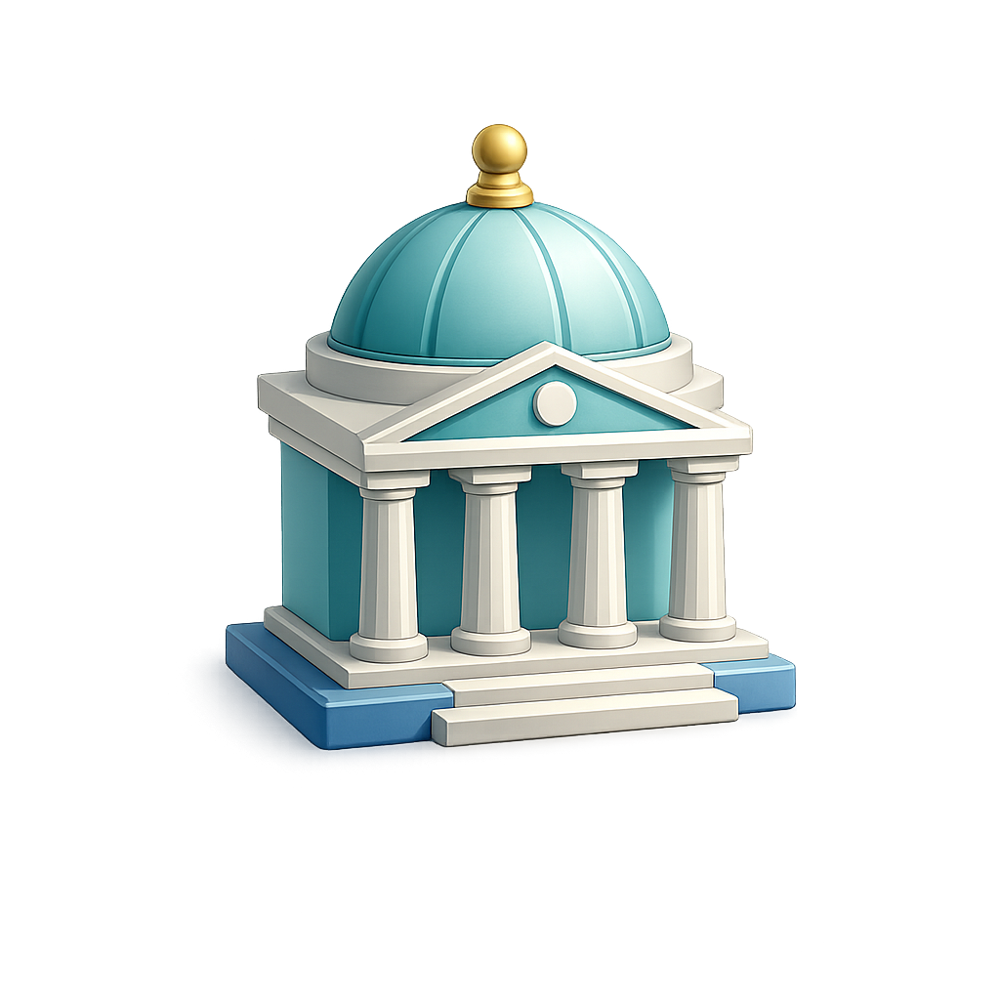
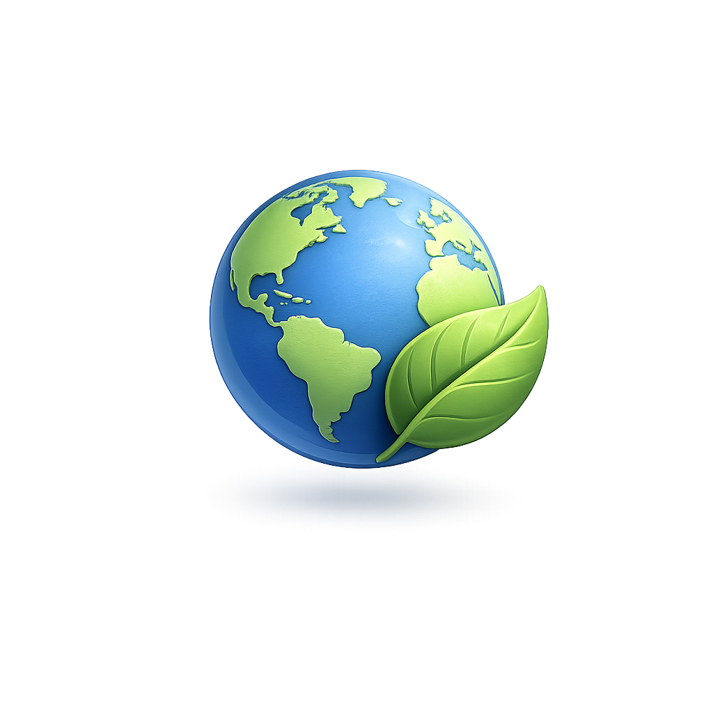

Ascolto guidato
Gli studenti partono da immagini sonore, video e domande brevi.
Sei lezioni pronte per collegare la musica ai temi della cittadinanza: ascolto, regole condivise, memoria, identità, ambiente, rispetto degli autori, emozioni e uso consapevole dei media.





Ogni card apre una lezione completa, pensata per essere usata in classe con video, ascolti, attività e quiz finale.
I QUADRIMESTRE
Un percorso per iniziare l'anno con ascolto consapevole, regole condivise, collaborazione e rispetto dei gusti musicali.
CLASSE 1II QUADRIMESTRE
Un percorso su identità nazionale, simboli della Repubblica, significato del testo e rispetto della Costituzione.
CLASSE 1II QUADRIMESTRE
Un percorso su musica, ascolto emotivo, colori, empatia, inclusione e playlist della classe.
CLASSE 2/3I QUADRIMESTRE
Un percorso per la Giornata della Memoria attraverso ascolti, domande guida, rispetto, responsabilità e riflessione condivisa.
CLASSE 2II QUADRIMESTRE
Una lezione sui suoni della natura, la musica descrittiva, la sostenibilità e la responsabilità verso il pianeta.
CLASSE 3II QUADRIMESTRE
Un percorso su cittadinanza digitale, diritto d'autore, plagio, pirateria, piattaforme, IA e uso responsabile della musica online.
Gli studenti partono da immagini sonore, video e domande brevi.
Ogni tema collega musica, parole e comportamenti responsabili.
Il quiz finale aiuta a fissare i concetti in modo leggero.